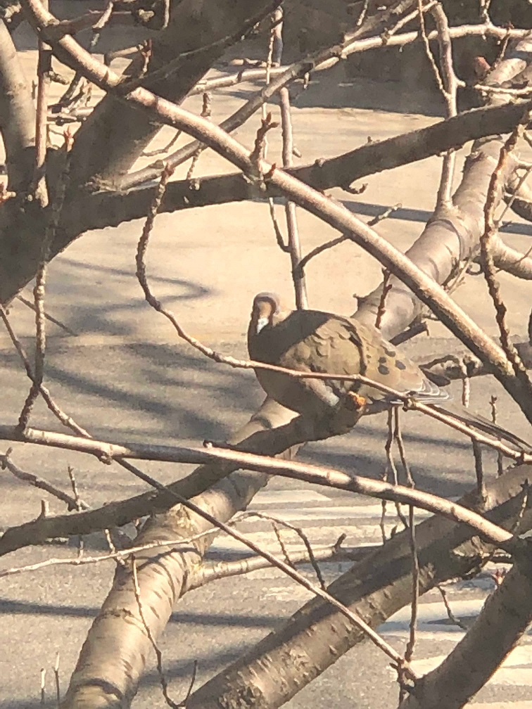

Welcome
"Welcome to my Spa of Dreams." I wish to leave to my future generations a message of peace, harmony and gratitude for all the beautiful and to the not so pleasant moments lived on this glorious paradise earth.
From Struggless to Success
I can't stop dreaming at the Capital of the World: That brightest days will come ...I may be late in my dream...Oh yes, but better to be late than never. As a survivor of so many attacks, aggresive behaviors, and hurricane Sandy, I am here to happily surprise all: "Together we will overcame all". Life offer us different hardships; education should be our priority, so here I am studying with love, and sacrifice I hope to be counted one day as a succesful New Yorker, too. I have the determination...all I need is your advice and experience to update my skills. I believe that the future is in our own hands. I am sure, that after failure, frustrations and chaos my success will come and that it will be a wonderful process for exemplary achievement. My willigness is to learn and keep helping others; for 13 years I have been working with Ryken Educational Center as a paraprofessional in special education. "Each one of those students has been my best heroical examples in New York City. I believe that working united in harmony, we will all achieve great things. Today, many of them are done with their associates and bachellors in college. They are great role models overcoming struggles!."
NYC Resilience

As we all have the same needs and good intentions, lets never forget that karma can be our best allies. let's try to accept others, without judgment we are all sinners,as God's kindness. So many did amazing sacrifices for us to preserve our quiet and peaceful nights, allow all to dream, relax and plan how to achieve with wisdom and honesty our american dream. The life of others should be also our joy and happines. We are here to preserve a better environment to our future generations.
Life is Precious
I dream to see a happier and healthier world...many people are suffering daily around, I am very grateful and never condemn hard circunstances. so, I would like to create an association that contribute to motivate others to protect body and mind. It is very important to take smart choices in life taking healthy decisions... Living positive, and enjoy life as much as we can. Life is too short. How can we help? It seem that many people are dedicating life to keep drinking, doing drugs, or smelling dust computer cleaner instead of sleeping. Go out and dance. How can we eliminate complains when classrooms are almost empty at the end of the classes and semesters. One great example to recognize that Life is Precious is the list of succesful people that are disabled ...people who did overcome challenges in life, it is extensive: Einstein, Lincoln, Dysney, Angelous, Seuss: "sometimes you will never know the value of a moment. Until it becomes a memory" Dr. Seuss.etc. Happiness and Education is my concern. How can we start accepting others and, simply loving changes. it is healthier to spray love to all. Life is Precious
Information
Live happy daily, and show real values to the world independent of others' point of view
About
Is Education the problem?
Persistence, discipline and a lot of enthusiasm is all we need. I am encharge of my happiness! As we all have the same 24 hours in a day... Let's visit CUNY... there are so many free opportunities too. We all have the same hours in a day, and the same needs, but if you didn't graduate...Visit BMCC.MEOC 163W 125th 15th floor. Go to your closer branch...Stand Up

joing my spa of dream and relax! listen to good music.
Visit The Music City